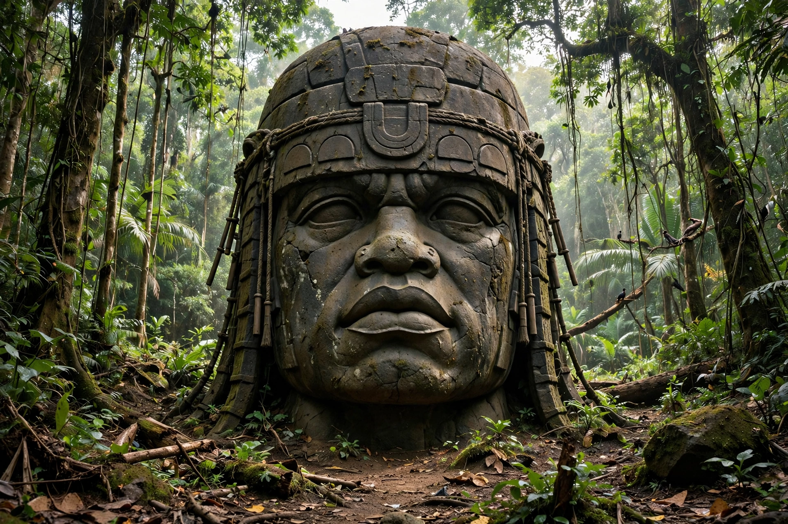

| Olmec colossal heads | |
|---|---|
| Culture | Olmec |
| Period | c. 1200–900 BC (Early–Middle Formative) |
| Number known | 17 |
| Material | Basalt |
| Size | 1.17–3.4 m high; up to ~50 tonnes |
| Sites | San Lorenzo (10), La Venta (4), Tres Zapotes (2), Takalik Abaj (1) |

The Olmec colossal heads are stone representations of human heads sculpted from large basalt boulders by the Olmec civilisation of the Gulf Coast of Mexico, the earliest major civilisation of Mesoamerica. Seventeen heads have been discovered, dating from at least 900 BC and probably as early as 1200 BC. They are the most recognisable works of Olmec art.
The heads range from 1.17 to 3.4 metres in height and weigh between about 6 and 50 tonnes. Each depicts a mature man with fleshy cheeks, a flat nose and slightly crossed eyes, wearing a distinctive close-fitting helmet-like headdress — often interpreted as protective gear for the Mesoamerican ballgame or as war helmets. The individualised features lead most scholars to conclude that the heads are portraits of powerful Olmec rulers. The basalt was quarried in the Tuxtla Mountains, at Cerro Cintepec, and transported as much as 80–100 km, probably floated on rafts along rivers.
The first head, at Tres Zapotes, was reported by José María Melgar y Serrano in 1862; systematic study began with Matthew Stirling's excavations of the 1930s–40s. Many heads were deliberately buried, and some mutilated, in antiquity — possibly in ritual "killing" of the monuments at the fall of San Lorenzo around 900 BC. Most originals are now in Mexican museums, including the Museo de Antropología de Xalapa and the Parque-Museo La Venta in Villahermosa, with replicas displayed at several sites.